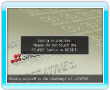

16 |
Cómo guardar |
 |

En LONPOS, los datos del juego se guardan automáticamente cada vez que vuelves al menú principal después de jugar una partida o tras haber hecho cambios en la configuración. Mientras el juego se está guardando, aparece un mensaje como el que se muestra en la imagen.
|
 |
 |